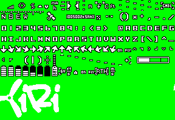
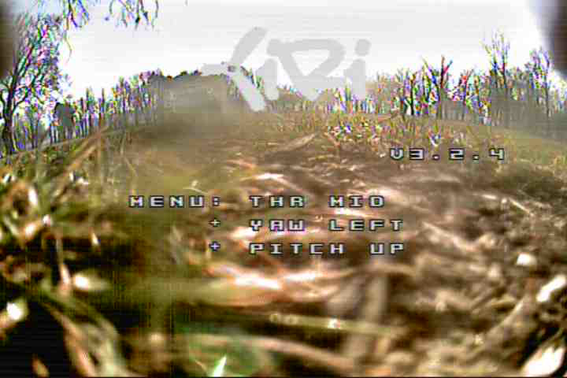

This tool can replace the logo in an OSD font file for Betaflight. Just select the base font and your custom image,
submit the form, then upload the resulting font file to your FC.
Source image restrictions
image has to be exactly 288px×72px
the best to use PNG or BMP format
background must be full green (#00ff00)
must use white and black colors only
it's better to use RGB mode than RGBA (alpha is ignored anyway)
green areas will be transparent on the OSD
Samples
Custom OSD logo template (download)My custom logo image (download)

My custom logo font based on digital font (download)

DVR snapshot of the generated font in use (download)
About this web app
This web app is based on my Python3 module bflogoreplacer
which is released under the GPLv3 license.
Betaflight OSD fonts are not part of its repository, but mirrored from the Configurator's repo.
The source code for this app can be found on GitHub and is released under the GPLv3 license.